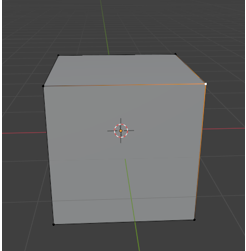
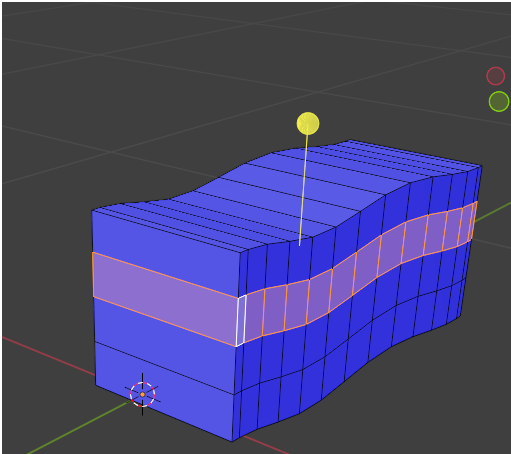

~The Extrude Tool~
2/24/2025
Extruding different sections at the same Time
The Little Arrow to more Mischief

Just like the Tools Menu in Object mode, the tools menu in Edit mode is quite extensive. Except that Edit mode has even more tools. Here you will find a large variety of tools, which you can use to make changes to your 3D model.
Here are Object Mode Tools, and the Edit mode Tools side by side, just so you can see the difference. When you are in Edit mode, you actually need to scroll to see all of the tools at the very bottom. You will also see that all of the tools that you had available to you in Object mode, are also available in Edit mode. You just have a lot of additional tools underneath of them. So, this makes the list of tool buttons in Edit mode quite a bit longer.
Since we already discussed the top tools, which are shared by both lists, in our section when discussing the Object work space tools, I will only be discussing the tools at the bottom section of this list.
In this first tools tutorial, I will be looking exclusively at the Extrude Tool.
Extrude Region
This tool here is Extrude Region. We use it when we want to pull out a certain section of our 3D model. The hot key for Extruding is E. So, if we press E on the keyboard with a face selected, we can extrude out that face.
You can start out in face mode and extrude a single face like this. Select face mode from the sub menu like this.
Select the top of the cube, hit either the E key on the keyboard, or the Extrude button in the tool bar.
We can now use the Scale tool and reshape the top of the section that we just extruded. We learned about the scale tool in our first tutorials concerning the Object tools.

Ok, let’s go back to our original cube before we used the extrude tool on it., and sub divide it by right clicking and choosing subdivide from the menu.
Extruding different sections at the same Time
Hit A to select the entire cube first.

This little menu shows up at the bottom. you can open and select how much you want to subdivide the cube.
Open this little Subdivide menu by hitting the little arrow to the left of it, and then choose 5 for the Number of Cuts.
Shift select different areas on the cube, we can extrude them all now. Hit E and extrude
Pull downward with the mouse and it will extrude all these regions out ward, but if you push upward with the mouse, it will push these regions inward.

Extruding Edge Mode
The thing with this extrude tool, is that we are not just restricted to working with faces. We can change the mode to either Edge, or Vertex and work with those sections of our 3D model too.
Change to Edge mode
Select an Edge, hit the E key on the keyboard and start extruding. You can hit either the X, or the Z key while pulling out the extrude, and then you will pull it out either in the X, or Z axis, in other words straight, instead of at an angle. I hit the X key while I was pulling it out and it pulled it out straight in the horizontal plane.
Now if you try to pull it out in the Y axis, nothing seems to work and you only get a line instead of an actually Extrude. You would use a Y axis if you are using a side edge, but since this is a top edge, it will not work correctly. But here I pulled it out in the Z axis and as you can see the Z axis enabled it to be pulled perfectly straight, upward.
Now here, I went back to face mode and selected the front face of the section I just extruded and pulled it out. It now, kind of looks like a chair. So, you can get an idea of how we can use this extrude method to create different objects, and mold them into something that we want.
Extruding a Vertex
We can also extrude a vertex. This can get quite interesting.
Start by selecting one vertex on our cube.

Now hit E to extrude it. If you hit the X on your gizmo in the Viewport, you can create a flat line because you are now restricting this line to the X axis.
Here I have the vertex selected while having the X selected on the Gizmo. Also make sure you are in Front Orthographic view when doing this.
Now just keep hitting the E key for each vertex that you create, and draw out your outline. This method can be used if you are trying to trace along the outline of an image; you can see where you can use this technique to do that.
Now if you wanted to, from here you can go into edge mode.
Now shift – Select all of these edges
Hit 7 to go to top view. Hit the E key on the keyboard while in edge mode and extrude these edges.
And this is what it looks like from the side, it picked up all of the curves that we created with extruding all of those vertices, so you can see that this could also be very helpful
Go to Face mode and select the top faces and then extrude them.
Here we created some sort of duct work type of thing. Just by extruding the mess out of everything.
The Little Arrow to more Mischief
If you look at the extrude tool, you will see it has a little arrow in the bottom right-hand corner and the little arrow means we can do even more extruding, just a little bit differently from the main method.
Manifold Extruding
Ok, now this is what would happen if we were to push in one of the segments of our cube using the default extrude method. Notice that it pushed the face inward but we have an extra face on the side of the cube that is left.
Now go back by hitting ctrl-Z. Choose Extrude Manifold, and push that face inward.
And look, we no longer have that extra piece on the side of the cube. It just pushes the entire section backwards.
Extrude Along Normals
Ok, now if we were to select this entire ring of faces, like this shift- alt click on a face in the ring of faces you want to select.
Now if you try to extrude these faces using the default Extrude tool, it would look like this. This is probably not what you wanted it to do.

You can turn on the Normals by going here. The Normals shows in which direction the faces are facing. Wheater they are facing inward on the object or outward. Checking the box for Face Orientation will turn them on. We can see all of our faces are facing outward because they are all colored blue now.
Now shift-alt select a face in the ring to select the entire ring.

Now either pull this tool handle down or up to move the faces out or in.
Don’t forget to turn off your normals by unchecking that little box under the Overlay menu again.
Extrude Individual
Here we are going to demonstrate what happens when we use the Extrude Individual Option of the Extrude Tool.
Here I just added a sphere, and selected all of the top half of it. This is what it would look like if I just used the default Extrude tool. It just extrudes the entire top section.
Now this is what happens when I use the Extrude Individual Tool. Again, you can use this tool to pull individual faces outward, or push them inward.
Extrude to Cursor
Create a plane and go into edit mode. This can be a bit intimidating at first as it seems that your object is chasing you mouse around, which is exactly what it is doing. So, make sure you are ready for this insane behavior to occur once you have this button selected and you start clicking on the viewport.
Now position your mouse above the plane, and click once. The plane will extrude to where you have your cursor positioned. Just keep clicking and this thing will follow wherever you click you mouse on the screen. Just remember to click on another tool if you want to leave this insanity.
So, as you can see the extrude tool, and all of its options can be a very powerful tool in your Blender 3D arsenal.